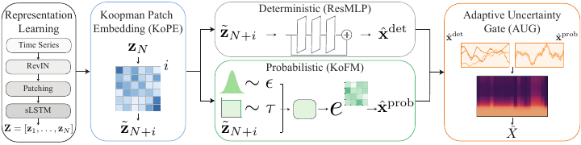

Koopman Generative Operators for Efficient Probabilistic Time-Series Forecasting
Advances in Neural Information Processing Systems (NeurIPS), 2026
Single-step probabilistic forecasting through matrix-exponential dynamics in a Koopman latent space.
BibTeX
@inproceedings{marshanski2026kgo,
title = {Koopman Generative Operators for Efficient
Probabilistic Time-Series Forecasting},
author = {Marshanski, Raz and Nochumsohn, Liran
and Jauhari, Mayank and Oreshkin, Boris N.
and Azencot, Omri},
booktitle = {Advances in Neural Information Processing Systems},
year = {2026}
}